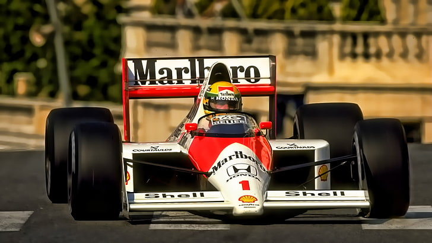
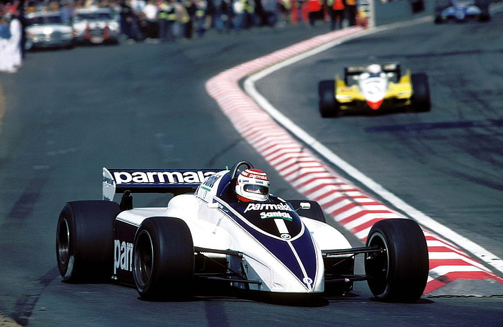
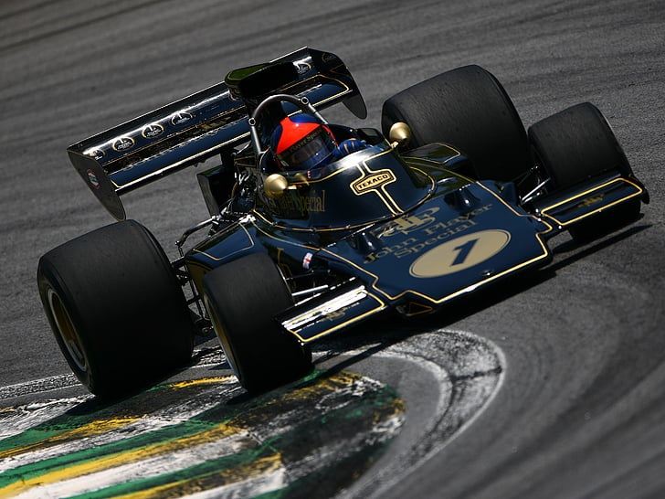
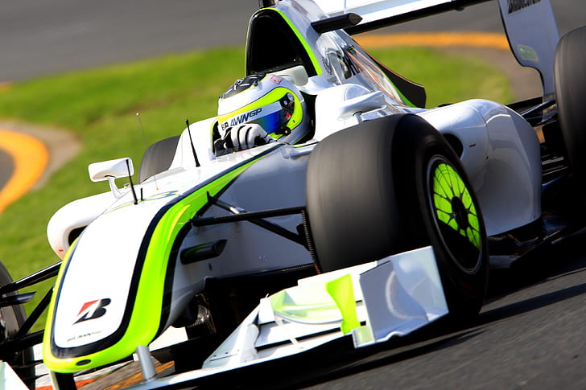
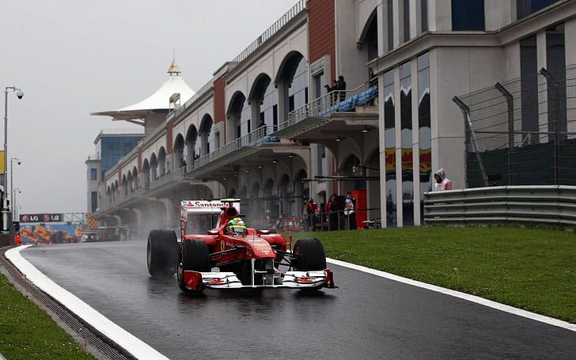

Ayrton Senna
Na temporada de 1984,Senna marcou seu primeiro ponto no campeonato mundial de pilotos logo no segundo grande prêmio que disputou, em Kyalami na África do Sul. Ele repetiu o resultado duas semanas depois, no Grande Prêmio da Bélgica, disputado no circuito de Zolder. Uma semana depois, o piloto brasileiro não conseguiu tempo para o Grande Prêmio de San Marino, em Imola. Tal fato aconteceu devido a um desentendimento entre a equipe Toleman e a fábrica italiana de pneus Pirelli, Ayrton e seu companheiro de equipe, Johnny Cecotto, não puderam participar dos treinos de sexta-feira. No sábado, sob chuva intensa, Ayrton Senna foi o piloto mais rápido na pista molhada, mas longe das marcas obtidas pelos seus adversários no dia anterior na pista seca. Depois, porém, com a pista seca, com muitos problemas no motor turbo Hart de seu Toleman, Senna se viu impedido de fazer um bom tempo.
Confira os números do tricampeão:
- Três títulos mundiais de Fórmula 1 (1988, 1990 e 1991)
- Temporadas na F1: 11 (1984-1994)
- Largadas: 161
- Pódios: 80
- Vitórias: 41
- Pole positions: 65
- Melhores voltas: 23
- Pontos marcados: 610
- 101 Corridas completadas
- 60 abandonos.
Nelson Piquet
Tri-Campeão da categoria maxima do automobilismo, o piloto teve sua estreia no ano de 1978, no GP da Alemanha, pela Ensign. Na sua estreia, ele não terminou a prova. No mesmo ano, ele fez sua estreia na Fórmula 1 com a equipe Ensign, McLaren e posteriormente pilotou para a Brabham.
Na Brabham, Piquet foi vice-campeão em 1980, antes de ganhar o campeonato de 1981. Não disputou o título em 1982,porém no ano seguinte um ressurgimento aconteceu na sua carreira em 1983, lhe dando o bi-campeonato mundial.
Para 1984 e 1985, Nelson contabilizou três vitórias com um 5º em 1985. Seu divisor de águas foi a mudança para a equipe Williams em 1986, e foi um postulante contumaz ao título até a corrida final, na Austrália, onde terminou em 3º.
O brasileiro teve seu tricampeonato em 1987, durante uma batalha feroz com o companheiro de equipe Nigel Mansell, que deixou o relacionamento de seu companheiro e da equipe estremecidos,com a equipe de Frank Williams ficando literalmente dividida entre os dois pilotos. A temporada também ficou marcada pelo forte acidente no circuito de Imola,coincidentemente na mesma curva que Ayrton Senna teria seu acidente fatal.
Piquet se mudou para a Lotus em 1988 para substituir o compatriota Senna,que estava indo para a mclaren,onde ele conseguiu 3 pódios, terminando em 6º na temporada com 22 pontos. Além disso, teve um 4º lugar como melhor resultado em 1989, terminando em 8º, com apenas 12 pontos,encerrando uma passagem sem brilho pela equipe.
Para encerrar a carreira, foi para a equipe Benetton na temporada de 1990. Na equipe que pouco tempo depois se consolidaria como campeã mundial,conseguiu ganhar duas corridas (Japão e Austrália em 1990), acabando o ano em 3º. Na temporada seguinte(1991) venceu apenas o Gp do Canadá e terminou com o 6º lugar antes de sua aposentadoria.
Confira os números do piloto:
- Três títulos mundiais de Fórmula 1 (1981, 1983 e 1987)
- Temporadas na F1: 13 (1978-1991)
- Largadas: 204
- Pódios: 60
- Vitórias: 23
- Pole positions: 24
- Melhores voltas: 23
- Pontos marcados: 481,5
- 121 Corridas completadas
- 84 abandonos.
Emerson Fittipaldi
Rubens Barrichello
Felipe Massa
Sua estreia na F1 foi pela equipe Sauber,em uma temporada onde o brasileiro pontuou,mas ficou marcado pela inconsistência, o que levou o brasileiro ao posto de piloto de testes da Ferrari em 2003
Após a temporada de "castigo",Felipe Massa retornou ao cockpit da Sauber,onde conseguiu bons resultados nas temporadas seguintes e começando a se estabelecer como um talento da até então nova geração.
2006 foi o ano do grande desafio até então na carreira,ser companheiro de equipe do heptacampeão Michael Schumacher e continuar a função de escudeiro,que até então era do compatriota Rubens Barrichello,mas mesmo com essa função, o brasileiro não fez feio,conquistou seus primeiros pódios e suas primeiras duas vitórias,em Istambul e em Interlagos,onde nesta ficou marcado pelo macacão nas cores do Brasil,ao invés do tradicional vermelho da Ferrari.
Em 2007,teria mais uma vez a funçao de escudeiro,mas dessa vez de Kimi Raikonnen,em uma temporada onde Felipe conquistou mais três vitórias e ajudou Kimi na etapa decisiva para o título do finlandês,e no título de construtores da Ferrari,terminando a temporada na quarta posição.
2008 sem sombra de dúvidas foi o auge do brasileiro,onde seis vitórias foram consagradas ao piloto,que em uma batalha até literalmente a última curva com Lewis Hamilton,infelizmente terminou com um vice-campeonato,por apenas um ponto. Porém,mesmo com o vice,o segundo título de construtores veio graças a sua maior temporada na F1.
2009 ficou marcado por um momento que freou seu auge,onde o acidente no GP da Hungria daquele ano o tirou daquela temporada,e muitos colocam isso como o motivo do piloto nunca mais ter sido o mesmo.
Entre 2010 e 2013 foram os últimos anos de Felipe pela equipe de Maranello,onde na temporada de 2010 além de ser a última vez que um brasileiro liderou o campeonato,também foi marcada por uma vitória tirada por conta do famoso rádio "Fernando is faster than you.",um 2011 sem pódios,um 2012 marcado por alguns pódios e também momentos de falta de consistência em algumas pistas. Além de um 2013 que foi um ano que poucos lembram,mas que foi quase um 2011 2.0,mas dessa vez teve pódio.
Assinou em 2014 um contrato com a Williams,e dá para dizer com toda certeza que o brasileiro renasceu na tradicional equipe inglesa,com vários pódios,uma pole position no GP da Áustria e uma quase vitória em Abu Dhabi.
2015 foi mais um ano consistente,onde Massa mais uma vez bateu na trave,mas neste caso foi no GP da Inglaterra,onde a Williams errou a estratégia,e consequentemente,a vitória. Porém no GP da Itália,foi mostrado o tamanho de Felipe Massa na Ferrari,onde o pódio do brasileiro foi comemorado como se o brasileiro ainda usasse o tradicional macacão vermelho da Ferrari.
2016 foi um ano marcado pela primeira aposentadoria do piloto da Williams,principalmente pela emocionante despedida no Autódromo de Interlagos,onde foi aplaudido por cada torcedor e membro de equipe em sua ida para os boxes,após abandonar a prova. Porém,em 2017 o brasileiro teve que cancelar a aposentadoria devido a ida de seu companheiro de equipe,Valtteri Bottas,para a Mercedes,o que fez o brasileiro adiar a aposentadoria.
Em 2017,ao lado do canadense Lance Stroll,Felipe venceu a disputa interna com folga,mesmo com Stroll conseguindo um pódio no Azerbaijão,o GP de Abu Dhabi de 2017 foi seu último na categoria máxima do automobilismo.
Confira os números do piloto que se tornou um dos grandes na história da Ferrari:
- Um vice-campeonato de Fórmula 1 (2008)
- Temporadas na F1: 13 (1978-1991)
- Largadas: 268
- Pódios: 41
- Vitórias: 11
- Pole positions: 16
- Melhores voltas: 15
- Pontos marcados: 1167
- 225 Corridas completadas
- 43 abandonos.
José Carlos Pace

Estreou na Fórmula 1 em 1972, pela equipe Williams, com um carro da que pertencia à equipe March. Sim,o piloto brasileiro iria estrear na categoria com um carro da temporada anterior a de sua estreia. Mesmo com um carro limitado, José marcou 3 pontos na sua primeira temporada,pontuando na Espanha(6ª Posição) e Bélgica(5ª Posição).
Em 1973, Pace acabou dando uma chance para outras categorias. Ele disputou três corridas pela equipe Surtees na F2(Não possui relação alguma com a F2 atual), algumas corridas pela Ferrari, e também disputou o WSC(World Sportscar Championship).
Pode não parecer um bom resultado, mas com um cenário totalmente desfavorável, conquistar 7 pontos e ficar em 11º lugar foi uma enorme conquista. Porém,José Carlos Pace considerava esses resultados “fracos”,mas desistir não estava nem cogitado a entrar em suas opções.
Então surge o convite da Brabham, equipe onde ele poderia finalmente mostrar todo o seu potencial. No dia 19 de agosto de 1973, José Carlos Pace fez história ao se tornar o segundo piloto brasileiro a subir ao pódio em uma corrida de Fórmula 1, o primeiro brasileiro foi Emerson Fittipaldi,que na época era apenas campeão mundial. Essa foi a primeira vez que Pace finalizou uma corrida no pódio na F1. Pace foi o terceiro colocado no GP da Áustria.
Como se essa superação já não fosse suficiente, Pace foi além. No dia 26 de janeiro de 1975, José Carlos Pace conquistou sua única vitória na F1,que contemplou o talento do brasileiro, com Emerson Fittipaldi na segunda posição,e mais do que uma simples vitória,foi uma vitória que entrou para a história!
A emoção de conquistar o 1º lugar foi grande, mas com dobradinha de Pace e Emerson no Autódromo de Interlagos,no GP de casa,a felicidade ficou maior ainda. A partir da 32ª, os dois protagonistas daquela corrida mostraram seu brilho com seus talentos.
Era para o piloto brasileiro ter conquistado mais dois pódios ainda na temporada de 1975, porém, com vários problemas, foi obrigado a abandonar várias corridas e terminou o mundial em 6º lugar.
Em 1976 ainda pontuou mais três vezes com uma 6ª posição na Espanha e dois 4º lugares na França e na Alemanha.
O brasileiro infelizmente nunca teve sua continuidade na categoria,pois em 1977,ano em que o piloto tinha começado com um pódio a temporada,o mesmo faleceu em um acidente aéreo.
Em 1985,o Autódromo de Interlagos é rebatizado com o nome do piloto,e em 1990,um busto de Pace é colocado na entrada principal do Autódromo,homenagem mais do que justa,para quem foi tão grande na categoria,muito além dos números.
Confira os números de Pace:
- Temporadas na F1: 6(1972-1977)
- Largadas: 72
- Pódios: 6
- Vitórias: 1
- Pole positions: 0
- Melhores voltas: 5
- Pontos marcados: 58
- 43 Corridas completadas
- 29 abandonos.